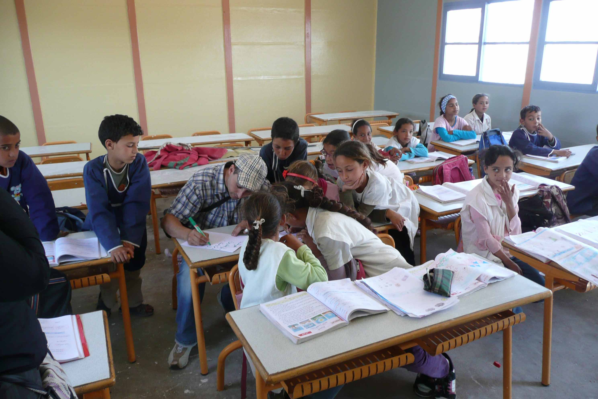
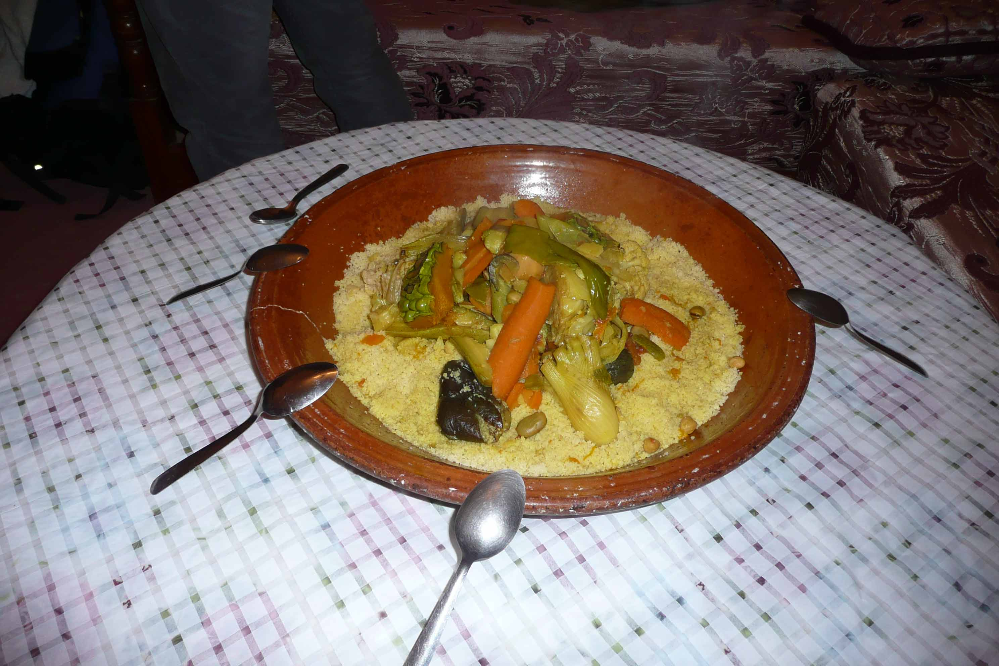
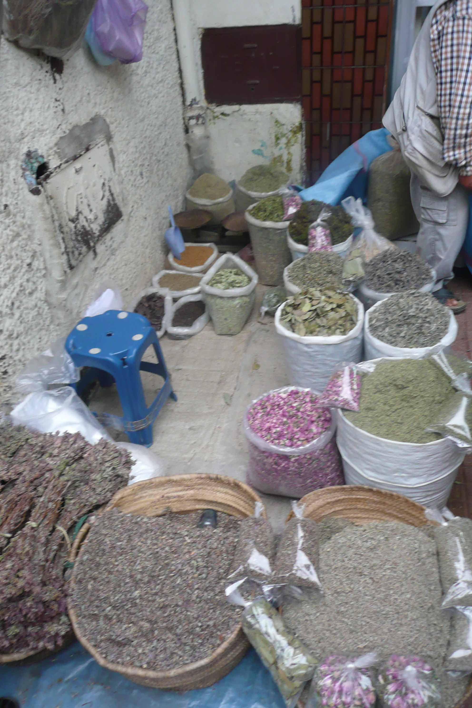

Projecten
Overig
Mixing work with pleasure in Morocco
Mixing work with pleasure in Morocco
At the beginning of the year, we of the Mocana (Middle East, Central Asia and Morocco) group within VIA had this problem at our hands. Our database was once again filling up with projects in Morocco that looked very nice on paper, but none of us actually knew anyone who’d been to one of them. So how to advise people on going there? Like all good solutions, the one that group-member Laura instantly came up with was surprisingly simple and attractive. “Why don’t we just go there?”, is what she said.
And so it came to pass that in the middle of a cold night in the beginning of May, Laura, Rob and I stepped in Lokien’s car to embark on a one week trip along the faces belonging to the names we knew from scarce emails only and the places the best camp descriptions can’t possibly describe. Our travels took us to the utterly non-touristy town of Ben Slimane, where Hanin invited us into his home and together with side-kick Khaled drove us to all the projects he organises in the surrounding villages. These include cleaning the beach, teaching people about environmental issues, digging public gardens and renovating school buildings. Most memorable to us though, was a visit to the school where Hanin teaches. Meant for the children living in the ghetto behind the beach houses of the more affluent, the school is divided into two classrooms only: one for the younger and one for the older children. In Holland, this would be the perfect formula for total chaos, but these children were so eager to learn! We were impressed by the ease with which they learned our Dutch song ‘hoofd, schouders, knieën, teen’, by their own musical performances and by the concentration involved in continuing their French lessons (a language the smallest Moroccon children often speak enviably well) while we were merrily eating and drinking tea in the back of the classroom. And you can go on a project with these lovely children!
Unfortunately we had to disappoint Hanin’s wife Fatima by not staying a second night to taste more of her delicious food and have ourselves dressed in Moroccan robes and painted with henna. But we had to move on to Morocco’s capital Rabat, where Rashad of our partner organisation CSM was expecting us. He taught us a lot about Moroccan joviality, driving around town whilst shouting at other drivers: “I swear, you go first!” and chatting with about every single person we passed on the street (especially if this happened to be a female of the Rubensian type). The amount of projects his organisation offers is enormous, catering for Moroccan as well as international volunteers. Arabic language courses, teaching English, pottery classes, environmental projects – they offer it all. What we saw affirmed the impression we already got from their swift replies to our emails: this is a professional organisation. Other organisations we were in touch with turned out to be less professional, or less active than we like them to be. So in the end we scraped some of them off our list – which of course is also useful.
All in all the trip was short but very fruitful. We saw the beauty of the country (visit for example the beautiful little blue town Chefchaouen in the Rif mountains!), managed to get a taste of the projects, exchanged a lot of information about how things actually work on the ground and on how we can make improvements on both sides, and experienced some of the cultural differences our volunteers should be aware of. Plus we know the people we cooperate with now, which undoubtedly makes communication in the future much easier – even if some of it still has to be done in French, which is not exactly our centre of expertise.
We would definately recommend you to go to one of our projects in Morocco. Interested? Look them up in our database! We’ll be expecting your application, insha’allah!
Wanna impress that special person with a delicious dinner, but are your kitchenskills rather flawed? Then the Moroccan souk is just the place for you. Aboutevery second market booth there sells a special mix of 45 spices that, as everysalesman will tell you, is especially made for "Moroccan women who can'tcook". Surely that'll work for us westerners too, right? We certainlybought our share. Now we're waiting for the for the magic to start working...
Bernadette